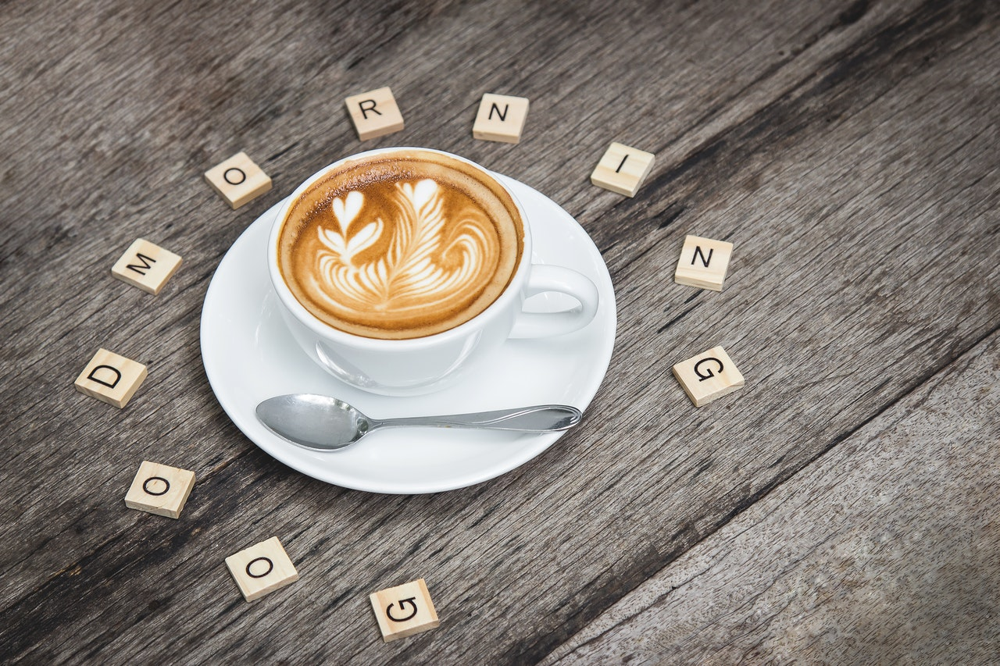

| Cappuccino | Latte | Espresso | Macchiato |
|---|
Cappuccino |
|---|

În Europa, consumul de cafea a fost puternic influențat până la începutul secolului al XVIII-lea de tradițiile Imperiului Otoman. Cafeaua acelor vremuri, pe care o cunoaștem și astăzi drept cafea turcească, se prepara prin fierberea boabelor de cafea în apă, cu sau fără zahăr adăugat. Spre finalul anilor 1700, britanicii și francezii au început să filtreze cafeaua, iar metoda lor a devenit tot mai populară. Termenul ”cappuccino” își are originile în acele vremuri și se datorează asemănării cromatice a acestei băuturi cu robele călugărilor Capucini. Cafenelele vieneze au început tot în această perioadă să prepare Kapuziner, o băutură pe bază de cafea cu frișcă, zahăr și, la cerere, condimente. Adevăratul cappuccino a apărut însă în Italia anilor 1900, după invenția și popularizarea espressorului. Pe atunci cafeaua nu putea fi preparată decât de un barista pregătit, iar oamenii o foloseau ca pretext social sau metodă de relaxare. Băutura încă se prepara după metoda vieneză, cu frișcă. Cappuccino de care ne bucurăm astăzi a avut parte de îmbunătățiri după cel de-al doilea Război Mondial, datorită răspândirii espressoarelor și a noii funcții a acestora, de preparare a spumei de lapte. De altfel, această băutură este apreciată în funcție de calitatea espresso-ului, de echilibrul dintre cantitatea laptelui cald și a celui înspumat, de cremozitate și de forma, respectiv de pregătirea ceștii în care este servit; aceasta trebuie încălzită înainte de prepararea cafelei. |
©Copy 2021author@gmail.com, 077668899 |
|---|